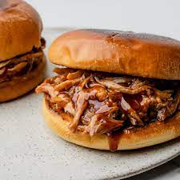

Slow your roll, this Boston butt takes patience. Get ready to make new friends as this recipe fills the neighborhood with the sweet smell of wood-smoked hog. Shred this roast to use on tacos, sandwiches, pizza, or anything that needs a little infusion of pig.